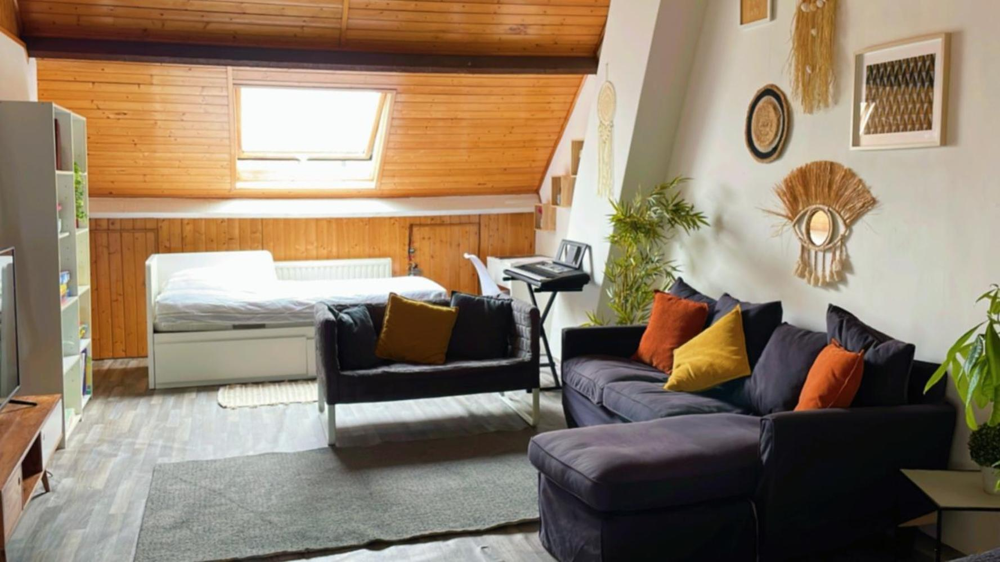

QADIN BİŞİRMƏYİN YOLLARI TİNDERDƏ
Çoxlarımız tez-tez köhnəlmiş stereotiplərdən istifadə edir və köhnə vərdişlərdən, həyat baxışlarından imtina etmək istəmirik.
Salam əziz Bazman izləyiciləri, bu yazıda Tinder-dən necə istifadə etmək lazımdır, bu barədə ümumi məsləhətləri sizinlə bölüşəcəyəm.
Strategiyalar
Tinder sadə bir tanışlıq proqramıdır və Azərbaycanda yaxşı işləyir. Bu proqramdan yaxşı istifadə etmək sənə effektiv nəticələr əldə etməyinə şərait yaradacaq. Bu cür plarformalar çox vaxt az zəhmətlə çox nəticə əldə etməyə imkan verir, lakin başa düşməli olduğun məqam budur ki, belə platformalar son dərəcə RƏQABƏTLİ olur, yəni əgər sən özünə baxmayan bir oğlansansa, heç bir şey əldə edə bilməyəcəksən, ancaq müəyyən bir səviyyədəsənsə, nəticələr əldə edə biləcəksən. Bunun üçün də addım-addım ən yaxşı nəticələri necə əldə edəcəyini izah edəcəyəm.
1. İnfrastrukturundan çox şey asılıdır
İş tinder-dən əvvəl öz imicin və infrastrukturunla əlaqədardır. Əgər sən yaxşı geyinirsənsə, bədən quruluşun pis deyilsə, bu zaman infrastrukturun daha güclü olacaq. Kişilərin çoxunda isə bunların heç biri yoxdur. Bu baxımdan infrastrukturun yoxdursa, yəni çox kök, götü,göbəyi biri-birinə qarışan və yaxud çox arıq və çəlimsiz bir oğlansansa və ya bərbad bir üslubun varsa, bunları düzəltməkdən başlamalısan. Üslubunu təkmilləşdirməyə və dəbli geyinməyə "BAZMANIN 30 GÜNLÜK TƏLİMİ" kitabını oxumaqla başlamalısan . Yaxşı bir imiclə öz infrastrukturunu yaratmağın mütləq və vacibdir.
2. Professional Fotoşəkillər Çəkdirməyin Mütləqdir
Tinder kişi-qadın münasibətləri dinamikasına görə çox rəqabətli platforma olduğu üçün, bir kişinin fotoşəkillərinin ƏLA olması mütləqdir. Heç bir kişi tinderdə orta vəziyyətdə olan şəkillərlə yaxşı nəticəyə ümid bəsləməməlidir. Ancaq hər hansı bir qadının fotoşəkilləri yüksək keyfiyyətli və ya yaxşı poza və üsluba sahib olmaq məcburiyyətində deyil. Bir qadının etməli olduğu şey özünü orada proyeksiya (əks etdirmək) etməkdir, çünki istənilən bir qadının cinsi bazar dəyəri mahiyyətcə yüksəkdir. Bir qadının pox kimi fotoşəkilləri olsa belə, hətta heç bir fotoşəkili olmasa belə, minlərlə kişi ilə ünsiyyət qurmaq imkanı əldə edə bilər. Ancaq bu kişilərə aid deyil. Xüsusilə birbaşa cinsi rəqabətin çox olduğu Tinder kimi tətbiqlərdə ORTA GÖRÜNÜŞLÜ KİŞİ = UDUZAN KİŞİ. Ona görə də bu iş orta və ya aşağı keyfiyyətli fotoşəkillərlə işə yaramayacaq, gedib pulunu verib əla şəkillər çəkdirməlisən. Bir kişinin 5-6 peşəkar fotoşəkili olsa, ona 2-3 il asanlıqla kifayət edir.
Çoxlu fotoşəkil çəkdirdikdən sonra hamısını photofeeler.com saytında yoxlamalısınız . Cəlbedicilik üçün 7 baldan çox almayan heç bir fotoşəkildən istifadə etmə və məlumatların aydınlığı üçün sənin hər bir fotoşəkilin ən azı 50 fərqli qadın tərəfindən qiymətləndirilməlidir. Bu baxımdan ən çox bəyəndiyin şəkilləri seçərək şansını artırmış olacaqsan.
3. Yeni Tinder Hesabı Açmağın Mütləqdir
Əgər Tinder-də daha əvvəldən hesabın varsa və çox nəticə əldə etməmisənsə, yəni heç bir qadınla tanış ola bilməmisənsə, yeni hesab açmalısan. Xüsusilə yeni hesabların ən böyük üstünlüyü "Noob Boost"dur, yəni Tinder alqoritmi 1 gün ərzində yeni hesabları daha çox ön plana çıxarır. Bu baxımdan, tətbiqə yeni başlayan kişilərin tətbiqə pul xərcləmələri və tətbiqdə qalmaları xüsusilə vacibdir. Bu noob boost azaldıqca, alacağınız dostluqların sayı da zamanla azalacaq.
Davamlı olaraq yeni hesab açsanız və ya səhv davransanız, nömrəniz, e-poçtunuz, şəkilləriniz, Google və ya Apple hesabınız tətbiq tərəfindən aşkarlanacaq və sizə "ölü hesab qadağası" veriləcək. Bu zaman proqramdan normal istifadə edərkən belə, heç bir uyğunluq əldə etməyəcəksən, yəni alqoritm səni heç bir qadının görməyəcəyi bir növ ölü ruhuna çevirəcək. Odur ki, hesabları daim silib açma. Bunu yalnız bir dəfə etməlisən, çünki Tinder kişiləri çox tez cəzalandıra bilir.
4.Tinder Gold və ya Platinium Mütləqdir
Tinder kişilərdən pul qazanan proqramdır və bu proqrama pul xərcləyənlər həmişə kişilərdir. Qadınlar ümumiyyətlə heç bir pul xərcləmirlər ya da ən ucuz paket olan Plus üzvlüyü alırlar, bu da ən ucuz paketdir, limitsiz sürüşdürmə hüququ verdiyi üçün idealdır.
Bu tətbiq həyat kimi bir tətbiqdir. Həyatda 3 manata 5 dönər verilmir. Əgər sən ölü götün qənimi və ac adamsansa, proqramdan çox şey gözləməməlisən, çünki proqram çox pul verən üzvləri ön plana çıxarır. Xüsusilə Platiniumda " bəyənmələrin prioritetləşdirilməsi" (ön plana çıxarılması) effekti var, bu da o deməkdir ki, bəyəndiyin qadın tətbiqə girəndə ilk növbədə səni görür.
Android-də Tinder olduqca bahadır, ona görə də Apple telefonundan girib appstore vasitəsi ilə almağın daha məqsədə uyğundur.
5. Effektiv Mesaj Yazmağı və Flört Etməyi Tətbiq etməlisən
Deyək ki, imicini düzəltdin, peşəkar fotoşəkillər çəkdirdin və Tinder üçün platinium hesabı aldın. Böyük bir şəhərdə yaşayırsansa, gözəl ÜSTÜNLÜK əldə etmisən. Əslində bunları mən deməməliyəm, kişilər çoxu bunu avtomatik olaraq etməlidirlər, amma etmirlər. Hər halda, uyğunlaşma tapmaq işin yarısıdırsa, işin digər yarısı isə bu uyğunlaşmalardan nəticə (seks) əldə etməkdir. Bunun üçün də əvvəlcə Təsirli mesajlaşmağı bacarmağın lazımdır. Qadına ilk mesajda nə yazacağını və söhbəti necə davam etdirəcəyini öyrənməli, başa düşməli və təcrübədə özündə sınamalısan. Hansı ilk mesajın sənin üçün daha uyğun olduğunu və söhbəti necə davam etdirəcəyini bir-bir sınamalısan. Həmçinin Flört Etmək Sənətini yaxşı başa düşməlisən və qadınlarla, xüsusən də sənə ciddi şans verən qadınların səndən bezmədən prosesi necə idarə edəcəyini bilməlisən. Əgər qadını darıxdırsan, hər hansı bir nəticə əldə etmək sənin üçün çətin olacaq və bütün zəhmətin və xərclərin boşa çıxacaq.
6. Qadının WhatsAppnı almaq üçün tələsmə
Kişilərin çoxu Tinder-də mesajlaşarkən qadından çox tez nömrə istəməyə başlayırlar. Bu pis bir hərəkətdir və çox vaxt sənə marağı olan bir qadının sənə marağının itirməsinə səbəb olur. Çox vaxt nömrə istəyən tərəf mən olmuram, çünki məqsədim nömrəmi qadınlara vermək deyil, bu işdə çox vasvasıyam. Ona görə də bu proqram vasitəsilə söhbət etməkdə heç bir problem yoxdur. Dərhal qadına “buranı sevmirəm, nömrəni ver” və ya “bura çox girmirəm, nömrəni və ya instaqramını ver” yazmaq düzgün deyil. Bunu deməyimin əsas səbəbi odur ki, söhbətin platforması dəyişdikcə söhbət daha az zövqlü olur. Məsələn, Tinder-də bir qızla tanış olsan, İnstaqrama keçib sonra da WhatsApp-a keçsəniz, əslində pis bir şey etmiş olursan, çünki söhbətin enerjisi aşağı düşür və söhbət ölür. Çox vaxt Tinder-də tanış olduğum qızlarla elə tinderdə də danışmağa davam edirəm. Bir çox qızlar mənim nömrəmi özləri istəyirlər, sırf konum atmaq bəhanəsi ilə. Əslində bu, kişi üçün sərfəlidir, çünki həddindən artıq səy göstərmirsən və həvəsli görünmürsən. Bu da qadınlara çox cəlbedici görünən bir xüsusiyyətdir. Bəzən qızlara İnstaqram belə vermirəm, çünki bunun qısamüddətli münasibət olacağı açıq-aydındırsa, niyə o qadını birbaşa şəxsi həyatıma cəlb edim? Tinder-də başlayan şey elə Tinder-də bitsin və əgər mən qızı istəmirəmsə, uyğunlaşmadan çıxarmağımla, həyatımdan çıxmağı bir olur.
7.Görüşü Evə Yaxın Bir Yerdə et
Tinder görüşlərini evə yaxın bir yerdə etməlisən. Qızla evə asanlıqla gedə bilməlisən ki, tez nəticə əldə edə biləsən. Mənim ümumi strategiyam qızla evimin yaxınlığındakı bir yerdə kofe içmək və sonra evdə viski içmək bəhanəsi ilə onu evə gətirməkdir. Evimdə həmişə spirtli içki var, xüsusən də keyfiyyətli pivə. Pivən yoxdursa, gələndə almaq daha yaxşı olardı. Mən içməyi çox sevməsəm də qadınlar çox sevirlər. Qadınlar içdikdən sonra da sevişməyə daha çox üstünlük verirlər. Evdə pivə içmək, söhbət etmək çox məhsuldardır. Evinizə gələn hər qızla sevişə bilməsən belə, heç olmasa nəticəyə çox yaxınlaşırsan və çox vaxt iş asanlıqla sevişməyə çevrilir.
8. Logistika Problemin Olmasın
Oyundakı ən vacib şeylərdən biri də, qadınlarla sevişmək və ya vaxt keçirə biləcəyin boş evin olmasıdır. Bu baxımdan, tək və ya bir nəfər otaq yoldaşı ilə yaşamağın lazımdır. Ən pis halda, özünə aid otağın olmalı və hər şeyi buna görə tənzimləməlisən. Xüsusilə də Tinder-də tanış olduğun və əlinə keçən sürətli fürsətlərdən istifadə etməlisən. Evin yoxdursa, bütün səylərin boşa çıxa bilər. Çox az tanıdığın bir qadınla maşında və ya oteldə sevişmək olmaz. Maşında ancaq müəyyən bir müddət tanıdığın qızla və ya sevgilinlə sevişə bilərsən. Əgər qız artıq sənin sevgilindirsə, yəni səni tanıyırsa, o zaman samanlıqda və ya tövlədə belə sevişə bilərsən, amma səninlə cinsi əlaqədə olacağına 100% zəmanət verilməyən qızları otelə və ya başqa bir yerə aparmağın yaxşı strategiya deyil. Çünki əvvəllər evim olmadığı vaxtlarda otelə və ya günlük evlərə tanış olduğum qadınlarla getmişəm ancaq sevişə bilmədiyim üçün boş yerə pulum da gedib. Qızı, dostunun evinə də apara bilərsən, amma vaxt uyğunluğunun olmaması və ya qızın narahat olub utancaq rejimə girməsi, sənə fayda verməyəcək. Tək yaşayacağın 1 otaqlı mənzildə bu işləri çox rahatlıqla yerinə yetirə bilərsən. Ən pisi 2 otaqlı mənzildə 2 nəfərlə kirayə qalmaqdır. Həddindən artıq insanla bir yerdə yaşamaq bu işlər üçün uyğun deyil, bunun üçün də evdə çox insanla bir yerdə yaşayırsansa, bazmen olmağın çətinləşəcək. Ona görə də logistika problemi böyük problemdir, onu həll etməyə çalışmalısan. Hökmən bahalı bir evi kirayə götürməyin də vacib deyil, sadə ancaq səliqəli və təmiz bir evin olması kifayət edir. 
9. Qoruyucu və Cialis Mütləqdir
Evdə ehtiyatda 2 növ prezervativ olmalıdır; qalın gecikdirici kremli prezervativ və ultra nazik prezervativ. Hər bir bazmenin şkafında bu iki növ prezervativ olmalıdır. Birinci dəfədə ən qalın olanı, ikinci, üçüncü seks üçün isə ən incə olanı istifadə edib öz performansına görə davam etməlisən. İlk boşalmadan sonra istək və hisslərin azalacağından sonrakında qalın olanları istifadə etməyə davam etmək həvəsini azalda bilər. Buna görə ikinci, üçüncü dəfələrdə nazik prezervativlərdən istifadə etmək daha yaxşı olacaq.
Cialis-ə sahib (performası artıran həblər) olmaq xüsusilə çox masturbasiya edən, beyni pornoqrafiyaya həddən artıq öyrəşmiş və uzun müddət cinsi əlaqədə olmayan kişilər üçün lazımdır. Bu kişilər əllərinə öyrəşdikləri və beyinləri sürətlə inkişaf edən seksuallığa adaptasiya olmadığı üçün ereksiya problemləri və ya çox erkən boşalma problemləri yaşaya bilər. Həmçinin, həddindən artıq spirtli içki qəbul etmisənsə və ayaq üstə dayana bilmirsənsə, aləti dik saxlamaq çətin olacaq. Əgər həyəcanlanırsansa və psixoloji cəhətdən yaxşı deyilsənsə, performans artıran dərman istifadə etməklə yaxşı nəticələr əldə edə bilərsən. Bu cür dərmanlardan daim istifadə etmək olmaz, onların ciddi mənfi təsirləri var, (xüsusilə də ürək xəstəlikləri olan kişilərə) bu həblərdən istifadə etmək qadağandır. Lakin sağlam bir kişisənsə və ürəyində heç bir problem yoxdursa, ehtiyatda bu cür həblər olması yaxşıdır. Cialis 5, 10 və ya 20 mq arasından, çox vaxt sənin üçün 5 və ya 10 mq kifayət edəcəkdir. Bu çox güclü bir penis sərtləşməsi ilə yanaşı, gec boşalmağa da imkan verir ki, bu da qısa müddətli cinsi əlaqədə qadının səni daha çox arzulamasına və səndən ayrıla bilməməsinə şərait yaradacaq. Ancaq ən idealı gecikdirici spreylərdir.
Əgər cinsi problemin varsa, bazmen həyatı sənin üçün uyğun olmaya bilər. Bir sevgilinin olması və həmin qadınla daimi cinsi həyat yaşamağın cinsi problemlərini həll edəcək. Unutma ki, sən seks maşını deyilsən, yəni duyğuların dəyişməsi və psixologiya da seksual həvəsə əhəmiyyətli dərəcədə təsir edir. Cialis çox təsadüfi qısa müddətli əlaqələr üçün yaxşıdır, lakin uzunmüddətli müntəzəm əlaqələr üçün Cialis tərkibli həblərdən istifadə etmək lazım deyil.
10 . Əlavələr
Evində mütləq və mütləq ən pis halda olsa belə, bluetooth dinamiki olmalıdır. Həmçinin qadınların çoxu qaranlığı sevirlər, yəni çox işıqda özlərini narahat hiss edirlər, bunun üçün də ətrafı tutqun saxlamaq üçün ətirli şamlardan istifadə etməlisən. Evdə spirt və kofe, həmçinin şokolad, peçenye və yaxud çərəzlər olması yaxşıdır. Qız üçün həmişə təmiz duş dəsmalı olması da xoşdur, çünki sevişmək nə qədər uzun çəkərsə, bir o qədər çox duş qəbul etmək üçün ehtiyac olacaq. Həmçinin fantaziya və cinsi həyatınızdan asılı olaraq bəzi oyuncaqlardan da istifadə edə bilərsiniz.